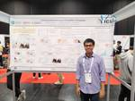

fltech - 富士通研究所の技術ブログ
https://blog.fltech.dev/
富士通研究所の研究員がさまざまなテーマで語る技術ブログ
フィード
”YolOOD: Utilizing Object Detection Concepts for Multi-Label Out-of-Distribution Detection” presented at CVPR 2024
fltech - 富士通研究所の技術ブログ
Hello, I am Satoru Koda at AI Laboratory. Fujitsu has been developing technologies for realizing the world where people can safely use AI. In June 2024, we presented our achievement at CVPR 2024, a flagship conference in the computer vision field.
4時間前
CVPR2024 で "YolOOD: Utilizing Object Detection Concepts for Multi-Label Out-of-Distribution Detection" について発表しました
fltech - 富士通研究所の技術ブログ
こんにちは、人工知能研究所の江田です。富士通では、AIの安全な利用を可能にする技術の開発を行っています。 この度研究成果の一つを、機械学習・コンピュータビジョンの最難関会議の一つであるCVPRにて発表しましたので、その内容を紹介します。
4時間前

Fujitsu Research of Europeのチームが ICLR 2024にて画像環境にデータを効率よく判定・適応するための新技術を発表
fltech - 富士通研究所の技術ブログ
こんにちは、Fujitsu Research of Europeのアブラ・チャウドゥリです。私は、コンピューティングを研究グループのシニアリサーチマネージャーとして、さまざまな状況でデータの分布が変化した時に、深層学習モデルがどのような反応をするかを研究しています。
8日前
Fujitsu Research of Europe team present new technology for data-efficient adaptation to new environments at ICLR 2024
fltech - 富士通研究所の技術ブログ
Hello! I am Abhra Chaudhuri, a Senior Researcher in the Computing Research Group at Fujitsu Research of Europe. I study the behaviour of deep neural networks under various kinds of distribution shifts.
8日前
ソーシャルデジタルツイン™︎ データ生成ツールを公開しました！
fltech - 富士通研究所の技術ブログ
コンバージングテクノロジー研究所の郭 兆功です。だいぶ間が空きましたがテックブログ記事3本目です。 我々のプロジェクトでは、開発したソーシャルデジタルツイン技術を Fujitsu Research Portal に公開しています。今回は、公開中のシェアドモビリティ最適配置デモアプリで、使用するデータファイル・設定ファイルが簡単に生成できるデータ生成ツールを開発しましたので、ご紹介します。
10日前

"Learning Decision Trees and Forests with Algorithmic Recourse" presented on ICML 2024
fltech - 富士通研究所の技術ブログ
Introduction Hi! This is Kentaro Kanamori from Artificial Intelligence Laboratory. We are conducting research and development on "XAI-based Decision-Making Assistant" and trying to apply our technologies to real decision-making tasks (e.g., discovering actions for imprving employees' productivity fr…
17日前
ICML2024 にて「アクション説明を考慮した決定木および木アンサンブルの学習技術」について発表します
fltech - 富士通研究所の技術ブログ
はじめに こんにちは．人工知能研究所の金森です． 富士通研究所では「説明可能AI（XAI）技術を用いた意思決定支援」に関する研究開発を行っており，現実世界の意思決定タスクへの適用（例えば，エンゲージメント調査データに基づいた従業員の生産性向上アクションの発見）に取り組んでいます． このたび，我々の研究成果である「アクション説明を考慮した決定木および木アンサンブルの学習技術」に関する研究論文が，機械学習分野の主要な国際会議である ICML2024 に spotlight 論文（投稿論文の上位3.5%！） として採択されたので，その内容を紹介します． 対象論文 タイトル: Learning Dec…
17日前
ASCII×Microsoft の生成AIコンテスト「AI Challenge Day」参加レポート
fltech - 富士通研究所の技術ブログ
こんにちは、DS)DI Platform事業部 Kozuchi delivery Group の仲程凜太朗です。2024/04/18～4/19に神戸にあるMicrosoft AI Co-Innovation Labs Japanで開催された ASCII × Microsoft が主催している RAG の精度向上コンテスト、「AI Challenge Day」に参加してきました。 富士通からは、Kozuchi Conversational Generative AIの開発メンバーの 技術戦略本部 ＳＭＥ推進統括部 岡元大輔、越智諒、 DS)DI Platform事業部 Kozuchi deliv…
18日前
1st place in the 3D Human Pose Estimation on H3WB
fltech - 富士通研究所の技術ブログ
Hello, I am Xiantan Zhu, a researcher from FUJITSU RESEARCH & DEVELOPMENT CENTER (FRDC). Recently, we got the top-1 place on H3WB (Human3.6M 3D WholeBody, https://paperswithcode.com/sota/3d-human-pose-estimation-on-h3wb). Our result is far superior to the second place. In this blog, I will introduce…
23日前
メディカルAI学会に参加・発表しました ～動向と反響～
fltech - 富士通研究所の技術ブログ
コンピューティング研究所の「ゲノムAI」チームです。 本チームは、ゲノムデータを対象としたさまざまなAIを開発しているチームになります。 この度、チームメンバーで「第6回日本メディカルAI学会学術集会」に参加してきたのでその報告を行います。開発中の成果を広くアピールしつつ、医療現場の方からフィードバックを得ることを目的に、発表をしてきました。
1ヶ月前
"Selective Mixup Fine-Tuning for Optimizing Non-Decomposable Objectives" presented at ICLR 2024
fltech - 富士通研究所の技術ブログ
Overview Hi! I am Sho Takemori from AI Innovation Core Project, Artificial Intelligence Laboratory. Recently, in our joint research with the Indian Institute of Science (IISc), we have developed an AI technology termed SelMix that enables an efficient optimization of real-world, complex performance …
1ヶ月前
ICLR 2024で"Selective Mixup Fine-Tuning for Optimizing Non-Decomposable Objectives"について発表しました
fltech - 富士通研究所の技術ブログ
こんにちは。AIイノベCPJの竹森です。 富士通研究所とインド理科大学院(Indian Institute of Science)との共同研究において、画像分類タスクなどのための、複雑だが実用上重要な評価指標の効率的な最適化を可能にするAI技術を開発し、ICLR 2024 でspotlightとして発表したので、この技術ブログで発表内容について解説します。 採択論文 タイトル: Selective Mixup Fine-Tuning for Optimizing Non-Decomposable Objectives 国際会議: The Twelfth International Confer…
1ヶ月前
Revolutionizing Cancer Genomics: The Power of XAI and Knowledge Graphs
fltech - 富士通研究所の技術ブログ
Hello, I'm Katsuhiko Murakami from the Genome AI Team at the Computing Laboratory. We've developed the world's first Explainable AI (XAI) for fusion genes, integrating XAI with knowledge graphs. Our research has been published in the cancer journal Cancers (Basel) (Impact Factor 5.2): "Pathogenicity…
1ヶ月前
説明可能AI (XAI)とナレッジグラフでがんゲノム医療の新領域へ
fltech - 富士通研究所の技術ブログ
こんにちは。 コンピューティング研究所ゲノムAIチーム 村上勝彦 です。 説明可能AI（XAI）とナレッジグラフを使った世界初の融合遺伝子むけXAIを開発し、がん専門誌 Cancers (Basel) （Impact Factor 5.2）に論文 “Pathogenicity prediction of gene fusion in structural variations: a knowledge graph-infused explainable artificial intelligence (XAI) framework”, K. Murakami, et al. Cancers (…
1ヶ月前
3Dエルゴノミクス負荷分析について
fltech - 富士通研究所の技術ブログ
こんにちは、人工知能研究所 Human Reasoning Core PJの本田です。 今日はFujitsu Kozuchiで公開している3Dエルゴノミクス負荷評価をご紹介します。
1ヶ月前
ISC 2024に参加・発表しました #3 ～ここまで来た！ 量子技術最前線～
fltech - 富士通研究所の技術ブログ
こんにちは、量子研究所で量子プラットフォームの研究開発を担当している中尾です。私が所属する量子研究所は、2024年5月12日から16日にドイツのハンブルグで開催されましたスーパーコンピュータ関連技術の国際学会展示会ISC High Performance 2024（https://www.isc-hpc.com/）に現地参加しました。この国際会議には富士通から複数のメンバーが現地参加したため、三回に分けて報告します 。今回が最後の三回目で量子コンピューティング技術の最新の成果のポスター発表と技術展示についてです。
2ヶ月前
Democratizing the use of AI with FUJITSU-MONAKA
fltech - 富士通研究所の技術ブログ
Introduction The growth of artificial intelligence (AI) is mainly driven by three factors – Algorithmic Innovation, Data & Compute. AI development is at an inflection point, as researchers developed larger models and larger data sets, the size of the models and volume of the data sets have grown bey…
2ヶ月前
1st place in the WeatherProof Challenge (CVPR 2024 UG2+)
fltech - 富士通研究所の技術ブログ
Hello, I am Nan Zhang, from Fujitsu Research & Development Center Co, Ltd. Recently, we participated in WeatherProof challenge (CVPR 2024 UG2+ Track 3). And we won the first place on the final leaderboard. In this blog, I will introduce the challenge information and our solution.
2ヶ月前
ISC 2024に参加・発表しました #2 ～FUJITSU-MONAKAプロセッサとは？～
fltech - 富士通研究所の技術ブログ
こんにちは、富士通研究所 先端技術開発本部の落合涼太、湊祐介です。富士通が開発しているプロセッサ「FUJITSU-MONAKA」に関する富士通の活動を展示発表するため、2024/05/12～5/16にドイツのハンブルクで開催された国際会議ISC High Performance 2024（https://www.isc-hpc.com/）に現地参加してきました。 この国際会議には富士通から複数のメンバーが現地参加したため、参加したメンバーのリレー方式で3編に分けて報告します 。 第2回目は先端技術開発本部 の展示説明内容とソフトの動向調査についてです。
2ヶ月前
ISC2024に参加・発表しました #1 ～HPCシステムの最新動向を知る！～
fltech - 富士通研究所の技術ブログ
こんにちは、富士通研究所コンピューティング研究所の小田嶋哲哉です。去年（2023年）に引き続き、文部科学省の科学技術試験研究委託事業「次世代基盤に係る調査研究」の一環として、2024年5月12日～16日にハンブルク（ドイツ）で開催された国際会議ISC2024 (https://www.isc-hpc.com/) に現地参加し、コンピューティング基盤の動向調査を行ってきました。今回は複数のメンバーが現地参加をしていることから、それぞれがISC2024で得られた知見、企業展示内容などをまとめた記事を3本連載していく予定です。本投稿では、第1回目として動向調査結果、特に大規模HPCシステムの動向につ…
2ヶ月前
交通映像監視の特長のご紹介
fltech - 富士通研究所の技術ブログ
こんにちは、富士通研究開発中心有限公司（Fujitsu Research & Development Center Co, Ltd.）のZhang Nanです。今日はFujitsu Kozuchiに搭載されている交通映像監視をご紹介します。
2ヶ月前
Introducing Traffic Image Surveillance
fltech - 富士通研究所の技術ブログ
Hello, I'm Zhang Nan, from Fujitsu Research & Development Center Co, Ltd. Today, I would like to introduce an exciting new AI core engine –Traffic Image Surveillance –that is now available from Fujitsu Kozuchi.
2ヶ月前
Introducing Smart Enterprise Data Assistant
fltech - 富士通研究所の技術ブログ
Hello, I'm Zhongguang Zheng from our Artificial Intelligence Laboratory. Today, I would like to introduce an exciting new AI core engine, - Smart Enterprise Data Assistant – which is now available from Fujitsu Kozuchi.
2ヶ月前
Smart Enterprise Data Assistant の特長のご紹介
fltech - 富士通研究所の技術ブログ
こんにちは、人工知能研究所のZhongguang Zhengです。今日はFujitsu Kozuchiに搭載されているSmart Enterprise Data Assistant をご紹介します。
2ヶ月前
世界的にAI開発で需要が高まっているGPUを効率良く利用するAI Computing Broker技術
fltech - 富士通研究所の技術ブログ
こんにちは、コンピューティング研究所の笠置です。 今回は世界的なGPU不足に対応するAI Computing Broker技術をご紹介します。 この技術は5月12日から16日にドイツ・ハンブルグで開催されたスーパーコンピュータの国際学会ISC 2024にて展示いたしました。
2ヶ月前
Security Audit Automation: A new frontier in security with large language models
fltech - 富士通研究所の技術ブログ
Hello, I am Tanaka from the Security AI Team at Fujitsu Research. We are pleased to announce that we have made our security audit automation technology available to the public on the Fujitsu Research Portal, where you can try out technologies developed by Fujitsu.
2ヶ月前
Composite AI ―最適化AI自動生成― のご紹介
fltech - 富士通研究所の技術ブログ
こんにちは、人工知能研究所の岩下です。今日は、Fujitsu Kozuchiに搭載されている Composite AI について紹介します。
2ヶ月前
Introducing Composite AI – Generate optimization AI automatically –
fltech - 富士通研究所の技術ブログ
Hello, I'm Hiroaki Iwashita from our Artificial Intelligence Laboratory. Today, I would like to introduce an exciting new AI core engine – Composite AI – which is now available from Fujitsu Kozuchi.
2ヶ月前
セキュリティ監査の自動化：大規模言語モデルが切り拓く新たなセキュリティ対策
fltech - 富士通研究所の技術ブログ
こんにちは。データ＆セキュリティ研究所の田中です。 この度、富士通が研究開発した技術を試すことができるFujitsu Research Portalにて、 セキュリティ監査自動化技術を一般公開しました。
2ヶ月前
Fujitsu Composite AI at Microsoft Build 2024
fltech - 富士通研究所の技術ブログ
こんにちは、人工知能研究所の小橋と山中です。 5月21日から23日にアメリカ・シアトルで開催されたマイクロソフト社(MS)の開発者向けイベントMicrosoft Build 2024で、MSのAIオーケストレーション機能であるSemantic KernelとFujitsu Composite AIのコラボをプレゼンしてきましたので、紹介します。
2ヶ月前